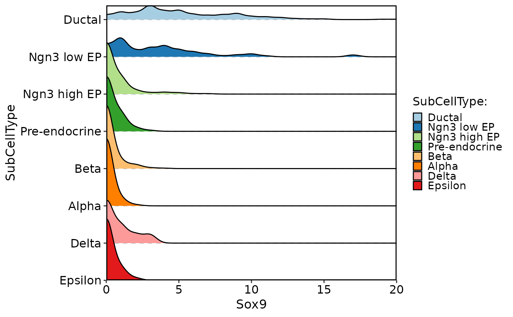

Plots the density of specified features in a single or multiple groups, grouped by specified variables.
Usage
CellDensityPlot(
srt,
features,
group.by = NULL,
split.by = NULL,
assay = NULL,
slot = "data",
flip = FALSE,
reverse = FALSE,
x_order = c("value", "rank"),
decreasing = NULL,
palette = "Paired",
palcolor = NULL,
cells = NULL,
keep_empty = FALSE,
y.nbreaks = 4,
y.min = NULL,
y.max = NULL,
same.y.lims = FALSE,
aspect.ratio = NULL,
title = NULL,
subtitle = NULL,
legend.position = "right",
legend.direction = "vertical",
theme_use = "theme_scp",
theme_args = list(),
combine = TRUE,
nrow = NULL,
ncol = NULL,
byrow = TRUE,
force = FALSE
)Arguments
- srt
A Seurat object.
- features
A character vector specifying the features to plot.
- group.by
A character vector specifying the variables to group the data by.
- split.by
A character vector specifying the variables to split the data by. Default is NULL, which means no splitting is performed.
- assay
A character specifying the assay to use from the Seurat object. Default is NULL, which means the default assay will be used.
- slot
A character specifying the slot to use from the assay. Default is "data".
- flip
A logical indicating whether to flip the x-axis. Default is FALSE.
- reverse
A logical indicating whether to reverse the y-axis. Default is FALSE.
- x_order
A character specifying how to order the x-axis. Can be "value" or "rank". Default is "value".
- decreasing
A logical indicating whether to order the groups in decreasing order. Default is NULL.
- palette
A character specifying the color palette to use for grouping variables. Default is "Paired".
- palcolor
A character specifying the color to use for each group. Default is NULL.
- cells
A character vector specifying the cells to plot. Default is NULL, which means all cells are included.
- keep_empty
A logical indicating whether to keep empty groups. Default is FALSE.
- y.nbreaks
An integer specifying the number of breaks on the y-axis. Default is 4.
- y.min
A numeric specifying the minimum value on the y-axis. Default is NULL, which means the minimum value will be automatically determined.
- y.max
A numeric specifying the maximum value on the y-axis. Default is NULL, which means the maximum value will be automatically determined.
- same.y.lims
A logical indicating whether to use the same y-axis limits for all plots. Default is FALSE.
- aspect.ratio
A numeric specifying the aspect ratio of the plot. Default is NULL, which means the aspect ratio will be automatically determined.
- title
A character specifying the title of the plot. Default is NULL.
- subtitle
A character specifying the subtitle of the plot. Default is NULL.
- legend.position
A character specifying the position of the legend. Default is "right".
- legend.direction
A character specifying the direction of the legend. Default is "vertical".
- theme_use
A character specifying the theme to use. Default is "theme_scp".
- theme_args
A list of arguments to pass to the theme function.
- combine
A logical indicating whether to combine multiple plots into a single plot. Default is TRUE.
- nrow
An integer specifying the number of rows in the combined plot. Default is NULL, which means determined automatically based on the number of plots.
- ncol
An integer specifying the number of columns in the combined plot. Default is NULL, which means determined automatically based on the number of plots.
- byrow
A logical indicating whether to add plots by row or by column in the combined plot. Default is TRUE.
- force
A logical indicating whether to continue plotting if there are more than 50 features. Default is FALSE.
Examples
data("pancreas_sub")
CellDensityPlot(pancreas_sub, features = "Sox9", group.by = "SubCellType")
#> Picking joint bandwidth of 0.453

pancreas_sub <- RunSlingshot(pancreas_sub, group.by = "SubCellType", reduction = "UMAP")
#> Warning: No shared levels found between `names(values)` of the manual scale and the data's fill values.
#> Warning: No shared levels found between `names(values)` of the manual scale and the data's fill values.
#> Warning: Removed 8 rows containing missing values or values outside the scale range (`geom_path()`).
#> Warning: Removed 8 rows containing missing values or values outside the scale range (`geom_path()`).
#> Error in gtable_add_grob(gtable, grob, t = mean(gtable$layout[grep("panel", gtable$layout$name), "t"]), l = dim(gtable)[2], clip = clip): `grobs` must be a single grob or a list of grobs, not a list matrix.
CellDensityPlot(pancreas_sub, features = "Lineage1", group.by = "SubCellType", aspect.ratio = 1)
#> Warning: Lineage1 are not in the features of srt.
#> Error in CellDensityPlot(pancreas_sub, features = "Lineage1", group.by = "SubCellType", aspect.ratio = 1): 'features' must be type of numeric variable.
CellDensityPlot(pancreas_sub, features = "Lineage1", group.by = "SubCellType", flip = TRUE)
#> Warning: Lineage1 are not in the features of srt.
#> Error in CellDensityPlot(pancreas_sub, features = "Lineage1", group.by = "SubCellType", flip = TRUE): 'features' must be type of numeric variable.